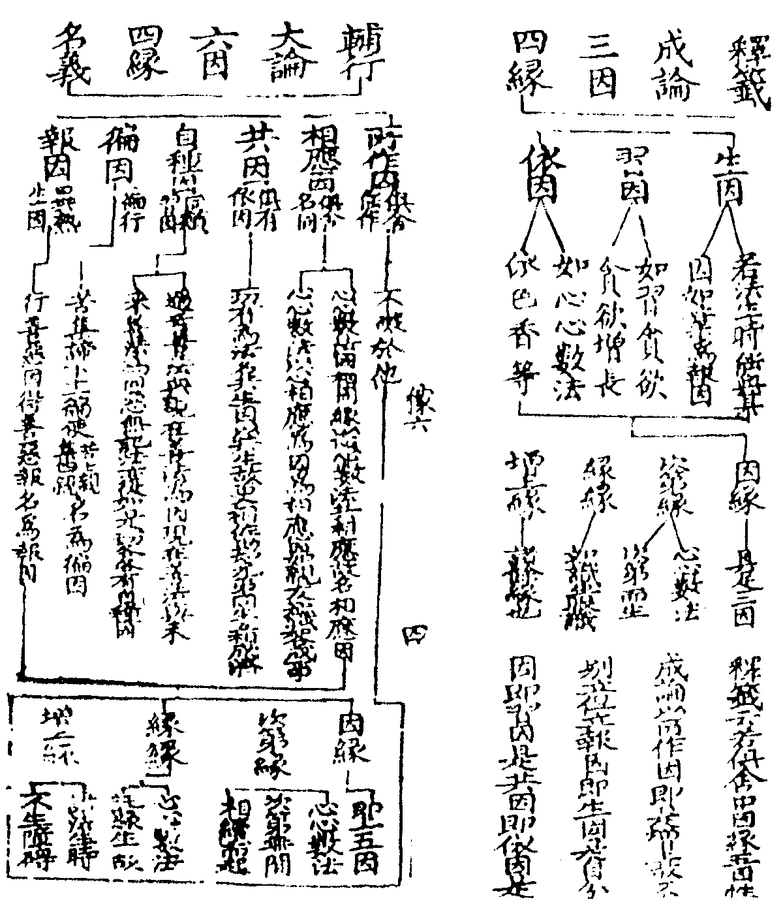

天台四教儀集註卷第六 稼六
先親後冤者從易至難順心成觀若析玄第六觀方與上親下樂第七上親中樂中親下樂者一者次第脩觀未暇與故二者順七周次第每一番用觀先與上樂中下非要故在後時與雖前後境境皆三使冤親平等以破嗔障輔行開為九周者一順從親至冤次第與樂不待六七却緣前親又復前境為得不得盖為破障且爾運心其實前人實未得樂故析玄上云問自身有樂可施於他忽若自身無樂將何施與荅自身若無樂可施即運心將餘諸天菩薩等樂而惠施之願彼冤親平等眾生得受如是等樂故又涅槃疏云雖欲拔苦實未拔苦皆是虛言雖欲與樂實未得樂此是假說又行者用觀當念冤讐如過去父母等方能冤親平等與樂廣如析玄上(云云)。
三多散眾生數息觀。
攀緣思慮與定相違故名多散息有四相止觀八(十七)云有聲曰風守之則散結滯曰氣守之則結出入不盡曰喘守之則勞不聲不滯出入俱盡曰息守之則定(文)數者從一至十不多不少令心不散禪門第五二有四師一師數出息不急不脹身則輕利易入三昧二師數入息隨息內斂三師出入無在但取所便而數四師依四時用數經家正依第三師又不許出入俱數恐生病故梵語阿那波那此云遣來(入息)遣去(出息)即是三世諸佛入道初門通於三乘四教又用息明六妙門謂數隨止觀還淨攝心在息從一至十名之為數細心依息知入知出故名為隨息心靜慮名之為止分別推析名之為觀轉心返照名之為還心無所依妄波不起名之為淨(如法界次第上)今是小乘助道但名數息。
四愚癡眾生因緣觀。
迷倒不了撥無因果故曰愚癡須知着我及計斷常并執性實三皆迷倒因緣者法界次第中(十七)云展轉感果為因互相由藉為緣(文)如無明為因能與行支為緣乃至生支為因能與老死為緣四教義二(十八)云十二因緣有三種不同一者三世十二因緣(過去二支因現在五支果現在三支因未來二支果)二者二世十二因緣(現在有十未來有二)三者一念十二因緣(此約現在隨一念心起即具十二因緣)三世破斷常二世破着我一念破性實也(文)輔行七上(末)云三世破斷常者三世相續故不斷三世迭謝故不常又過去破常未來破斷現在雙破斷常二世破我者現未二世具十二因緣於父生愛於母生嗔名為無明父遺體時謂是己有名之為行從識支去至老死支與二世同(文)輔行八上(十一)云言一念者非謂極促一剎那時謂善惡業成名為一念異於三世二世連縛等相故名一念皆是無常故無性實(文)如妙玄二(十六)禪門三(九)然此三種因緣破愚癡者(着我在內)凖大集及禪經說若毗曇大經乃以界方便破着我此皆隨機冝樂也若束十二為三道輪轉相生者俱舍云三煩惱二業七事亦名果(雖有十二而二三為性三謂或業事二謂因果)畧果及畧因由中可比二(後際畧果前際畧因中間廣說可比知也比凖俱舍缺畧義若凖婆沙前際畧果後際畧因乃全畧義補注十二引論具釋)又云從惑生惑業從業生於事從事事惑生有支理惟此(十二因緣通名有支道理惟若此也此名束十二輪為三道以能通義與輪轉義同廣如輔行三下十四釋)。

輔行引俱舍云能作及俱有同類與相應徧行并異熟許因唯六種今且依大論畧出六因相以大論是一家承用名字稍同故且依之乃至云復次心心數法從四緣生無想滅定從三緣生除於緣緣諸餘心數不相應行及色從二緣生除次第緣及緣緣餘有為法劣故無有從於一緣生者報生心心數法從五因生除於徧因無漏心心數法從三因生謂相應共及無障碍淨名記云十二秪是四六而已故知但是離合說也且如無明秪是行家之能通也即同類因行必四相即俱有也行中五部亦同類也(見歷四諦思歷一諦)無明行中心心數法共行共感所作必同行有必招識等異熟此行(必有)徧行五部之惑若四緣中論云增上即能作因緣五因性比六因說可知輔行八上(十一)云大論問佛說因緣甚為難解云何令於癡人觀耶荅非如牛馬等禪門但云聦明利根分別籌量不得正慧邪心取理名為愚癡(文)北因緣觀與支佛何異今是助道破障畧論三世支佛正觀破惑必須逆順兩緣百千萬世因緣等。
五多障眾生念佛觀。
止觀云睡障念處乃云逼迫障禪門第四明三種障念三身治(彼通大乘今且明小乘助道)障即惡業三種者一昏沉暗塞障(昏睡無記)念應身三十二相治二惡念思惟障(欲作五逆十惡等事)念報身力無畏等治三境界逼迫障(身忽卒痛或見無手足火焚水渴等也)念法身空寂無為治(文)今明小乘助道據四教義云破境界逼迫障合念真空法身若以身對教如輔行一下七云前之三教各念一身謂生應報圓念法身諸身具足(文)。
二別相念處(如前四念處是)。
妙玄四(二十三)云五障既除觀慧諦當能觀四諦而正以苦諦為初門作四念處觀破四顛倒(文)析玄上(二十)云別謂各別身受心法不同故相謂行相觀此四法作不淨等行相故言念觀者然觀體非念觀是其慧推求觀察知不淨等故(乃至)處謂處所謂身受心法是念所緣住止之處故(文)於五陰境脩四念處為破四倒合五為四受則六根對六塵義兼內外故獨為一想行一向居內故合為一又此念處別名屬慧通亦有定輔行三下(十一)云四境上心故名為定(文)。
三總相念處一觀身不淨受心法皆不淨乃至觀法無我身受心亦無我中間例知(已上三科名外凡亦名資粮位)。
此有四句四念處一云一境別觀別正是別相念處二境別觀總三境總觀別此二是總相之方便四境觀俱總是總相念處(文)初則一藥對一倒中間二句觀心漸熟或別於一境總用四觀或別用一觀總觀四境第四境觀純熟舉一俱得也若析玄凖俱舍疏前三皆別相攝第四句方是總相位今依妙玄四念處初句是別後三皆總今此正當境總觀別謂別用一觀總觀四境又上停心破障四念處惟觀苦諦至內凡位方觀四諦妙玄四(三十三)云七賢位人明識四諦此約觧說心行理外名外凡資粮者從喻也欲越三有此為資粮。
二明內凡者有四謂煖頂忍世第一(此四位為內凡亦名加行位又名四善根位)。
漸見法性心遊理內身居有漏聖道未生故名內凡以定資慧加功用行故名加行聖道根本亦曰善根煖從喻妙玄四(二十四)云以別總念處觀緣四諦境能發似解伏煩惱惑得佛法氣分如鑽燧先煙春陽煖發以慧鑽境發相似觧觧即喻煖(此喻慧行)又如春夏積集花草自有煖生以四諦慧習眾善法善法熏積慧觧得起故名煖也(此喻行行)頂妙玄四(二十四)云似觧轉增得四如意定十六諦觀轉更分明在煖之上如登山頂觀矚四方悉皆明了故名頂法(文)忍妙玄四(二十四)云亦是似觧增長五種善法增進成根於四諦中堪忍樂欲(文)亦忍可義世第一釋籤四五云此是有漏故名世間於中最勝故云第一(文)此四位觀行者俱舍頌云從此生煖法(從總相後生煖善根)具觀四聖諦脩十六行觀(四諦為所緣十六行為能緣釋籤謂煖入諦十六行相有觧入字字恐誤或約上二界四諦体同通觧云八耳其實只觀欲界四諦此位有三品)次生頂亦然(用觀同前亦有三品)下中忍同頂(下忍遍觀八諦中忍縮觀明減緣行今皆云同頂者下忍雖上下遍觀不出四諦中忍雖咸緣行約初觀說)上惟觀欲苦一行一剎那(此上忍合有一行二剎那心言一剎那此揀滿說)世第一亦然(上忍位中有二剎那一剎那[書-曰+皿]餘一剎那在名上忍滿即入世第一今一剎那引入無漏故云亦然也)。
中忍減緣行者若遍觀八諦脩三十二行名下忍位若初依欲界苦脩四行次例觀上二界苦亦四行又觀欲集四行次上二界集四行乃至上二界道下不用最後乘之一行名為一周减一行也復從前觀從後减至第四番减上二界道諦下道之一行到此能緣之行既無所緣之諦亦减此道行與道緣同名亦與緣同减故云减緣必减行(據初一行)减行未必减緣(據後三行)第五番减欲界道諦下乘行乃至最初欲界苦下空行總有三十一周减緣减行皆名中忍唯留一行并所緣苦境入上忍位(此位所留一行隨行者所冝如釋籤第四云云)是則上四下三七緣與初行同名行與緣同减故釋籤四(四)云七周减緣二十四周减行。
十六行義如輔行三下(十七)及析玄上具釋文上二界合一四諦者同一定地故以欲界現前比上而觀故析玄五義備釋(云云)此則伏三界四諦下惑至發真時故上二界同名比法忍智等又十六行只是觀門涅槃疏名十六諦者取諦審觀察義故又此滅緣行妙玄三八合作八番者以行從緣但約八諦為八周也四教義一(十二)云中忍作十番縮觀者約後七諦以行從緣為七周開欲界苦下所減三行為三周總為十番妙玄八(八)云三番縮觀進成上忍者以三界不出四諦亦以行從緣減後三諦故曰二番諸文詳畧不同盖赴機異耳四善根勝利者俱舍頌云煖必至涅槃頂終不斷善(釋籤四云忍位是進煖位是退頂位是進退兩際猶如山頂文四教義二云煖頂退者何云性地荅此人雖造惡墮地獄一入受罪不復重入有性地善根故能得聖果文且必至涅槃與終不斷善有何異耶盖煖雖造惡入獄終不久留後必生人天證涅槃果若到頂位雖退入惡必不起大邪見斷善根故但有明昧淺深之殊其善根一也)忍不墮惡道(四教義二（十二）云下中二忍雖起煩惱惡業而不受三途猶受人天百千萬生若上忍成但有人天七生業在)第一入離生(此一剎那即入見道故同見道離四趣生)問前中忍中玄文云但作二心觀於一行釋籤何云彼四心同一行一緣耶荅中忍二心似於忍智二心也以由忍智二心雖在世第一後心發真而得今中忍位有此似觧故云如似約一行說但有二心故云但作二心觀於一行若釋籤云四心者緣行各二故云彼四心同一行一緣也釋籤四引論明脩煖法從欲界至無所有八地各九品并一具縛總七十三人是則煖法通於三界涅槃經何云如是煖法是色界法非欲界有文須知能脩之人通於三界所發煖法依色界定發也釋籤引評家云盡是色界法住定地法文涅槃疏作三義釋云一多用定發煖法觀從多為言二據中間三界皆能發於煖法而色界居中故言色有三據處為語色發煖法易欲界則難(文)。
上來內凡外凡總名凡位亦名七方便位。
以此七位為入聖道之方便諸文或云五方便者盖停心破障故不論總別念處但合為一(文)。
次明聖位亦分三一見道(初果)二脩道(二三果)三無學道(四果)。
四教義云通名聖者聖以正為義捨凡性入正性初果見理破惑名見道二三果去重慮緣真名脩道四果惑盡名曰無學文句八(四)云研真斷惑名為學真窮惑盡名曰無學(文)然初果位從世第一後心苦忍真明(或云苦忍明發即欲界苦諦下若法忍也明發即苦法智也謂真智明發也)於八諦下發八忍八智總十六心有門以十五心名見道為初果向十六心是脩道初果攝析玄空門以十六心名見道為初果二果去方屬脩道宗計不同不須和會經家雖多用有門高麗師欲令易觧且凖空門註見道是初果也八忍八智者俱舍頌云前十五見道見未曾見故世第一無間即緣欲界苦生無漏法忍忍次生法智次緣餘界苦生類忍類智緣集滅道諦各生二亦然。
七聖位對三道四果及向次第超越住果勝進委如妙玄四教義明今圖示之。
一須陀洹此翻預流此位斷三界八十八使見惑見真諦故名為見道又名聖位。
預流者預入聖道法流金剛云入流或翻逆流逆生死流也析玄下(八)名抵債不受三途業債故斷三界八十八使者何故婆沙論云二十八使見道斷餘六十使修道斷耶先達云有二種根性若等觀四諦者見道斷八十八使若不等觀四諦者見道中唯斷三界苦諦下二十八使餘三諦下見隨修道斷乃是鈍根。
二斯陀含此云一來此位斷欲界九品思中斷前六品盡後三品猶在故更一來。
此果斷欲界九品思惑前之六品於初果之後此果之前須論家家今先明欲惑潤七番生死次通示超次根性後別釋家家之義惑有麄細故分九品無漏智力故經七生所以須七生者如輔行引成論云於七世中無漏智熟如服酥法七日病消如歌羅邏七日一變如親族法限至七代如七步蛇四大力故行至七步蛇毒力故不至八步惑力至七道力非八婆沙云應云十四何故云七荅中有本有數不出七故但云七(乃至)若總論生應云七人七天十四中有合二十八生且依前說不出七故故但云七。
任斷者此人非全無觀行但不及次斷勤加功行耳次斷者雖異任斷乃對超斷越次得名本斷超者輔行六上(十)云本得非想定即是已斷下八地思至十六心應名阿羅漢向但名阿那含者以凡地時有漏智弱但名那含若本斷九品今名三向若七八品得名二果斷六品等名二果向斷五四等但名初果(文)須抑退者意令此人此生必定起無漏聖道故(文出俱舍)小超者止觀六(九)云若凡地未得禪十六心滿超能兼除欲惑諸品或三兩品(輔行云應云三四或恐文誤或婆沙不同)即是家家一種子等即是小超(文)及前文云超斷至五品名家家乃至八品名一種子(文)輔行(六上)釋云今文中言超斷者只是下文小超之人(此定止觀超斷屬小超也)本在凡地未得色定或脩欲定欲惑未斷此人至十六心超斷五品名為家家此之五品同四品故(此文別釋小超中斷五品惑論家家者一種人也不可據此之文通定小超之人皆未得色定如止觀云若凡地未得禪若已得禪豈止三向盖小超人其類非一)隨其本斷品之多少而得名為家家種子及以無學向果等名(此文通釋小超超果不定盖止觀文明小超人至一種子義猶未[書-曰+皿]故此點云隨其本斷等也盖隨其小超本位斷惑品數多少則斷五品名家家多則乃至極果則知小超不可惟局三果向也故止觀云十六心復即有一念超果至那含或超至羅漢)問小超若超至四果者上觀何故但云若凡地未得禪超能兼除欲惑諸品荅此據小超中未得色定者而言故云若凡地未得禪超能兼除欲惑諸品若之為言乃不定之辭也况諸品之言豈惟八品故下即云一種子等問或謂小超只至三向乃判輔行隨其本斷品之多少謂雙點超次而得名為家家種子乃別點小超及以無學向果等名乃別點次斷如此可乎荅止觀雖超次對辯輔行唯指小超如云今文中言超斷者即是下文小超之人乃至云此之五品同四品故隨其本斷品之多少等乃釋小超一連之文豈可分擘對當耶問止觀超次對辯何故小超只至一種子耶荅小超一種子已前與次斷異若三果後與次斷同故止觀不論也問或謂十六心後一念超果至那含屬本斷超超至羅漢屬大超者且小超何不預耶荅本斷超人豈止那含若大超人凡地聞唱善來即證羅漢何得云十六心後問小超既至羅漢與大超何別荅以小超凡地修觀伏於見思至十六心超果不定若大超人凡地一呼善來直超四果與小超自不侔矣次釋家家之義家家者受生處不一也人中三洲張王不同天上六欲宮殿等別故論天家家人家家不等家家平等家家輔行六上(六)云家家者有二不同謂天及人天謂欲天三二家生而證圓寂(此天家家)人謂人處或三二家或三二洲而證圓寂(此人家家已上皆平等家家也)若天三生天三人二若天二生天二人一(天不等家家)人生三二反此可知(人不等家家)故天家家先於人中得見道已若超若次進斷三四後於天中三二處生人中反此天家家者於最後生天中餘殘結斷名得圓寂人中家家凖此可知(然輔行云三二生而證圓寂即四果也此是家家種性不可作尋常斷九品惑得三果釋也)俱舍頌云斷欲三四品三二生家家(此二句正頌家家斷三品則損四生復三生在論三生家家若斷四品則損五生後二生在論二生家家)斷五至二向(斷至五品名二果向)斷六一來果斷七或八品一生名一間(斷至七品或八品猶有一生間隔此據命終者)此則第三向(此據不命終者而向三果)斷九不還果已上論頌正頌加行次斷備乎九種根性輔行問何緣無斷一品二品及斷五品名家家耶荅加行次人斷二必三斷五必六必無不斷大品惑盡而命終者輔行云此次斷義與令文同盖指俱舍加行次斷與止觀所引婆沙小超是同問次斷之人必斷大品惑盡何故斷四不至五六又斷八品何不至九荅斷初大品已既有餘力故更進斷第四也不至九者以有得果越界二義故六唯得果無越界義是故斷五必至於六二三品中全無二義斷二必三於理無疑問還有斷一二品論五四生家家否荅既斷二必三豈惟一耶問還有斷六品論一生家家否荅家家者受生處不一既唯一生則不論也問斷五至二向還可於此論功齊四品論家家否荅加行次人既斷五必六不同小超也三緣具足方論家家俱舍云即預流者進斷修惑若三緣具轉名家家一斷惑緣斷欲修惑三四品故(此揀異任斷)二成根緣得能治彼三四成無漏根故(此揀異本斷超)三受生緣更受欲有三二生故(此揀異大超)頌中但說初後緣者(斷欲三四品即斷或緣三二生家家即受生緣)論中既云預流果後進斷修惑即是治彼三四成無漏根義凖已成故不具說三緣缺一非家家之義若斷七八亦具三緣轉名一間此約次斷若小超人既論家家三緣必具輔行六上若超若次進斷三四(文)得非小超亦至三四品耶彼釋家家三二處生故以五品功齊四品而總言耳非謂小超至四品也又復小超至五品而不至六者由得果義故止觀六引婆沙云次斷五品名斯陀含向超斷五品名家家次斷六品名斯陀含果超斷六品名一徃來次斷七品八品名阿那含向超斷八品名一種子(文)問次斷五品名二向超斷五品名家家人斯陀含與一徃來那含向與一種子其義無別何分超次荅由命終不命終經生不經生異也盖次斷五品名二向者此人既不命終向二果也超斷五品名家家者此既命終雖斷五品功齊四品以論家家下二例說故三緣具足得受一間正取命終一生間隔三緣不具不受一間之名但名阿那含向正取不經生者向三果也然教門方便論家家者為令聖者畏經生故速得證果若任斷人既經生捐惑故不說也。
此果斷欲界下三品思盡進斷上八地思取證四果而般涅槃(此云滅度)就此釋般那含此名從畧乃是般涅槃之阿那含也舊對家家稱為般般義無所凖又此且論有餘涅槃俱舍論云般涅槃者謂有餘依有餘師說亦無餘依此不應理彼應捨壽無自在故止觀六(五)云次斷初禪初品至非想第八品凡七十一品悉名阿羅漢向六種那含位在其中(此是任斷根性)輔行六上(六)引大論七種一中般二生般三有行般四無行般五上流般(色界)六現般(欲界)七無色般俱舍七種前五如大論第六却取無色般(輔行脫一無字乃云但取色般并五為六)第七方立現般荊溪謂俱舍不立現般指七種中第六不立耳非謂論文不明現般據二論六種一立一不立對釋止觀六種那含故有此言但諸文種數多少今凖俱舍三界七種圖示然後對揀頌云此中生有行無行般涅槃上流若雜修能徃色究竟超半超遍沒餘能徃有頂(餘字指不雜修有頂非非想處)行無色有四住此般涅槃(輔行六上析玄具釋論頌七種先色次無色後欲般今圖順三界次第色善善善無無無廣福無徧無少光無少大梵梵究竟現見熱煩想果生雲淨量淨音量光梵輔眾)。
大論七種名同俱舍列次小異(知下圖示)俱舍論云行無色者差別有四謂在欲界離色界貪從此命終生於無色此并前五成六不還復有不行色無色界即住於此現般涅槃并前六為七全超謂在欲界於四禪中已徧雜修遇緣退失從梵眾沒生色究竟中間盡越故名全超半超梵眾沒已中間漸受十四天處或超一二乃至十三後乃方生色究竟天皆名半超非全超故通受半名徧沒全不能超名為徧沒色界徧沒即十六天大梵是天主我慢無想是外道所居聖者不生此二天也俱舍復有九種即於色般合五為三有行無行皆生般攝即開三為九頌云行色界有九謂三各分三業惑根有殊致成三九別。
諸文或云五種獨指色般或云八種三界七中加不定般(補注十四初引婆沙三界般中遍有不定進老示不定相乃約期心欲界便般涅槃或謂能克却生上界而取證也或期生上界忽發宿習欲界即證色無色凖說可知)雜心論七種妙玄所用於色界五初開中為三(速非速經久)并後四成七毘曇有一萬二千九百六十種般如釋籤第五具示色界中般者初離欲界生色界時厭苦心切即在中有而般涅槃故屬色攝若至色界上生餘天雖有中有不得論般為無宿習厭苦力故(如析玄下)無色不立中般者指歸鈔(十八)云經云無色眾生無有中陰者毘曇法中說除四空餘一切處定有中陰以無色界無處所故(文)俱舍明隨於何處得無色定於命終時即生無色圖中引五差者謂下中上上勝上極輔行六(上三)析玄下(十三)委釋行相由此五禪生五淨居又樂論議者恐就下界修觀時說非生淨居有論議也以二禪上無語言故(文)。
四阿羅漢此云無學又云無生又云殺賊又云應供此位斷見思俱盡子縛已斷果縛猶在名有餘涅槃若灰身滅智名無餘涅槃又名孤調解脫畧明聲聞位竟。
此位斷上八地七十二品思俱盡四智已圓(我生已盡梵行已立所作已辦不受後有)無法可學名無學果亦名究竟(如析玄下)阿羅漢者文句一云或言無翻含三義故淨名疏十引智論釋云一殺賊從破惡以得名二不生從怖魔以受稱三應供因乞士以成德文(因果對釋)多含不翻乃經家正意以三義翻之乃順古耳若釋比丘因名乞士等對舉果名盖欲顯大比丘之階位也(如法華文句及觀經疏)又前標聲聞通凡聖位若阿羅漢局第四果此位修三昧一名金剛二名重空三名電光(上二名如妙玄第四電光如止觀第九電光義通初果金剛通前五種羅漢重空別在不動羅漢所修)此果別號二種三種六種九種及果性退不退義今歷示之先明二種。
初時不時從緣得名次慧俱約觀立號三壞不壞依境受稱也或凖正理論以時不時敵對慧俱若凖妙玄四(廿六)及四教義二(十六)信行法行各二不得滅盡定者但是慧解脫得滅盡定者名俱解脫舊云敵對乃從正從多各對則旁正兼舉以信行亦有帶事兼修法行亦有緣空直入若壞法不壞法與慧俱同舊約五義揀判慧俱一約性共慧人修性念處俱人修共念處(四教義)二約正助慧人正道斷結俱人兼修助道(光明句中四教義二)三約事理直緣真理名慧解脫帶事兼修名俱觧脫事者一帶根本四禪俱人亦依世禪修六行觀故二帶無漏禪慧人但至觀禪俱人具修觀練熏修(止觀第九婆沙亦有少分慧脫全分慧脫此有三根至無四禪下根也能修一禪至四禪中根也能修無漏禪至九想十想上根也俱人能修一二三禪下根具四禪中根修觀練熏修上根也妙樂二云四禪一切羅漢並得次觀等四俱解脫人方乃具足)三得滅盡定(如妙玄四廿六)已上三事俱人兼得也四約神變慧人十四變化俱人十八變(文句二)五約三明八解俱人則具慧人則無若輔行云通通於六明唯局三(天眼宿命漏盡三也)諸羅漢皆能得之(文)此有闕具之義婆沙云若有一明二明名慧解脫(文)凖知俱人三明具足次明三種。
慧俱略如上無疑者三藏教法四韋陀典天文地理一切通達故曰無疑四教義二云問不應別說無疑九種羅漢無此名目荅此出智度論明欲結集法藏集千羅漢皆得共解脫無疑解脫也(文)既是大論開出在佛世時俱人所攝佛世且明自行入道是故諸文只云慧俱(六種九種皆無此名若集論明六種中有無疑法者與不動法名異義一非今無疑)釋籤五(十九)云得滅[書-曰+皿]定但名俱解脫人以未修緣念處終非無疑解脫也(文)故知無疑乃俱人中勝者耳小大言之慧俱並小無疑乃名大阿羅漢妙樂一(三十一)引中阿含舍利弗問五百比丘幾三明幾俱解脫幾慧解脫佛言九十人三明九十三俱解脫餘但慧解脫荊溪云三明者即無疑解脫(文)須知三明是俱人得取其勝者復云無疑也後明六種附揀七種及列九種然後約六種明果性退否。
天台四教儀集註卷第六